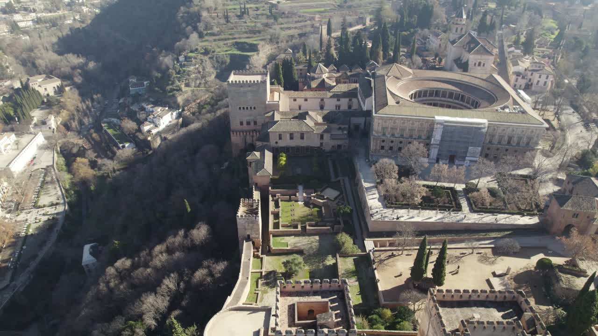
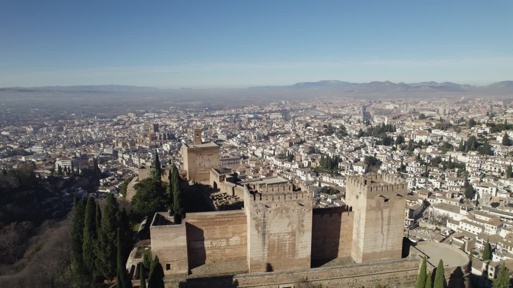
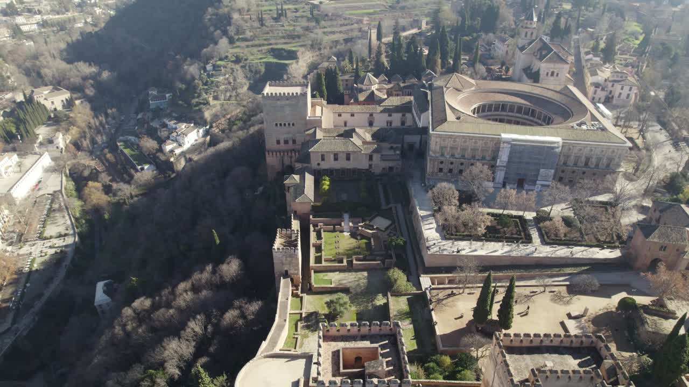
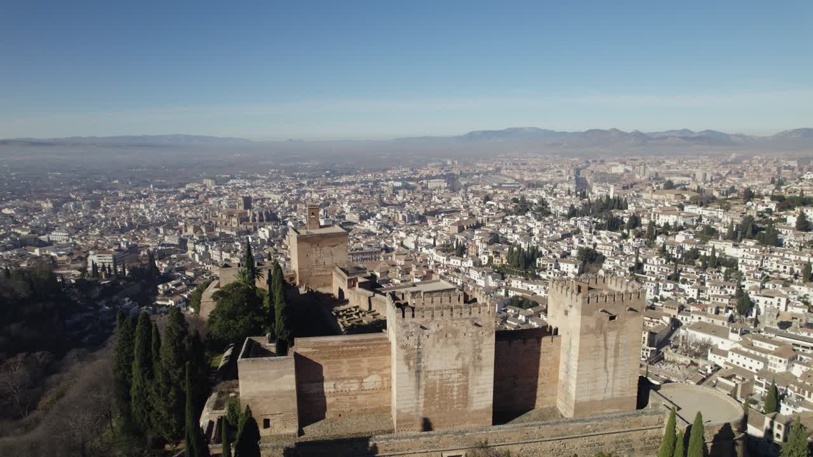
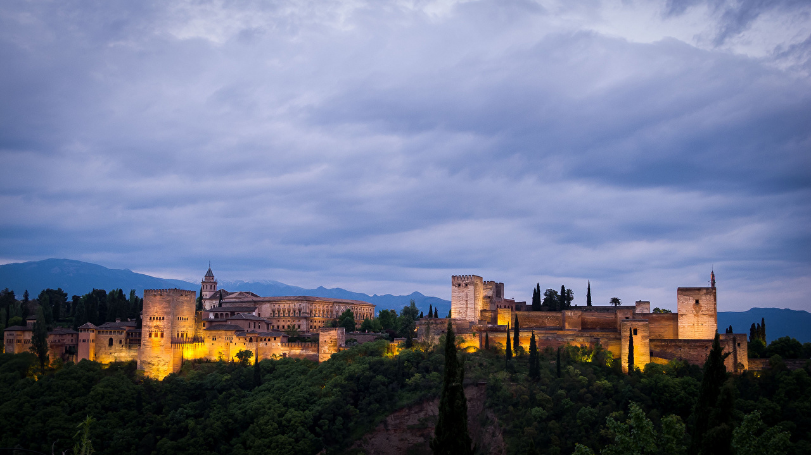
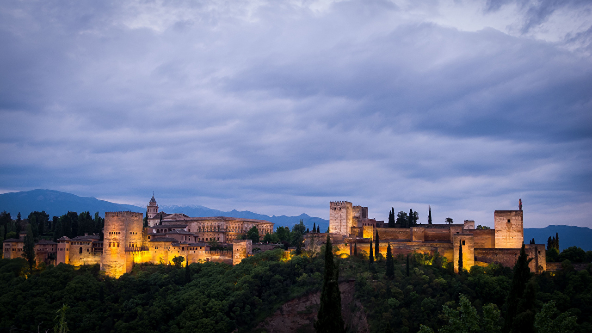

Granada
Granada It's a beautiful city
Granada It's a beautiful city
Granada to magiczne miasto w południowej Hiszpanii, leżące w regionie Andaluzji. Usytuowana w malowniczej okolicy Sierra Nevada, Granada jest znana ze swojej bogatej historii, urokliwych zabytków i fascynującej mieszanki kultur.
Miasto jest najbardziej znanym ze względu na Alhambrę - kompleks pałacowy z XIII wieku, który był główną siedzibą mauryskich władców. Alhambra jest uznawana za jedno z najwspanialszych dzieł architektonicznych na świecie i przyciąga miliony turystów każdego roku.
Granada ma długą historię, w której muzułmańskie, chrześcijańskie i żydowskie wpływy kulturowe łączą się w unikalny sposób. Spacerując przez wąskie uliczki dzielnicy Albaicín, można poczuć magiczną atmosferę starego miasta i podziwiać piękne widoki na Alhambrę.
Ponadto, miasto słynie z bujnego życia artystycznego, od tradycyjnej flamenco po współczesne sztuki wizualne. Tutejsza kuchnia andaluzyjska zachwyca bogactwem smaków i aromatów, oferując wyśmienite potrawy, takie jak tapas, gazpacho, czy tradycyjne dania z ryb.
Granada, miasto w południowej Hiszpanii, jest pełne historii, kultury i niesamowitych atrakcji. Oto lista niektórych z nich:
Historia Granady sięga czasów starożytnych, a jednym z najważniejszych okresów było panowanie Maurów, którzy uczynili z niej stolicę Emiratu Granady. W XIV wieku Alhambra, kompleks pałacowy na wzgórzu, stała się rezydencją królów Nasrydów, co przyczyniło się do rozwoju architektury muzułmańskiej w regionie.
W 1492 roku Granada została zdobyta przez katolickich monarchów Ferdynanda II Aragońskiego i Izabelę I Kastylijską, co zakończyło okres rządów muzułmańskich na Półwyspie Iberyjskim. To wydarzenie, znane jako zdobycie Granady (hiszp. La Toma de Granada), było symbolicznym punktem kończącym rekonkwistę Hiszpanii.
Wpływy muzułmańskie są nadal widoczne w architekturze Alhambry, z jej zdobieniami, ogrodami i fontannami, co przypomina o bogatej historii miasta. W Granadzie można znaleźć również ślady wpływów chrześcijańskich i żydowskich, które przyczyniły się do kulturalnego i architektonicznego bogactwa miasta.
Jednym z symboli miasta jest Katedra w Granadzie, wznosząca się w miejscu, gdzie pierwotnie znajdował się meczet. Budowa katedry rozpoczęła się w stylu gotyckim, ale później zmieniono ją na styl renesansowy, co jest przykładem harmonii między kulturami.
Granada jest również znana z flamenco, wyrazistej formy sztuki, która łączy muzykę, taniec i śpiew. Jest to jeden z wielu elementów, które sprawiają, że miasto jest centrum artystycznym i kulturalnym, przyciągającym artystów, pisarzy i muzyków z całego świata.
Kuchnia Granady jest bogata i zróżnicowana, oferując wyjątkowe smaki oparte na tradycji i lokalnych składnikach. Niektóre z charakterystycznych dań obejmują:
Granada jest pełna restauracji oferujących wyjątkowe doznania kulinarne. Wśród nich znajdują się takie miejsca jak:
 




 
